Cabane wall alignment
The side view showed uneven log ends and a rectangular opening through the wall.
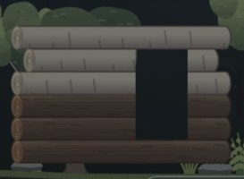
Wall courses now end at the same points. The doorway is on the right gable, seen edge-on in the side view.
Small discoveries, strange failures, and repairs from the world of Archē.
The side view showed uneven log ends and a rectangular opening through the wall.

Wall courses now end at the same points. The doorway is on the right gable, seen edge-on in the side view.
Action buttons extended across the character and terrain on narrow screens.
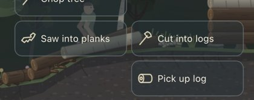
Phone action slots now occupy a narrower strip along the right edge. Their order and individual slots stay fixed.
The player entered the water even with the end of a floating trunk within stepping distance.
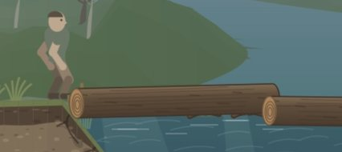
Walking now accounts for the rounded end of the trunk and checks for a reachable deck before starting the swim.
A tethered trunk could stop at the waterline even after the player reached land.
The pull can now lift the leading end onto a low bank while the trunk is still partly in the water.
The campfire halo reduced contrast around the character.
Firelight now brightens skin and clothing directly. The weaker halo leaves the character’s outline clearer against the cave wall.
Rock texture remained faint beside a burning campfire.

Nearby rock faces catch warm highlights and fractures retain contrast. The effect fades with distance from the fire.
Characters and unlit campfire fuel retained daylight colors underground.
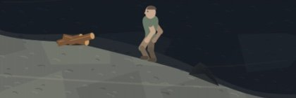
Both now darken as daylight fades away from the cave entrance. A lit campfire illuminates the nearby passage.
Nearby surfaces brightened only slightly around a burning campfire at night.
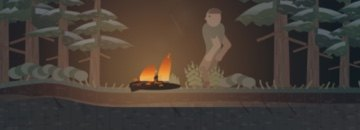
Campfire light now brightens and warms nearby players, vegetation, objects, and ground. The effect falls off with distance and weakens as the fire burns down.
Alpine terrain and conifer forest met at a sharp visual boundary.
Ground and background colors now blend across biome boundaries. Distant conifers taper out toward alpine terrain.
Campfire flames used flat shapes and nearby surfaces showed little illumination.
The campfire now renders layered flames, smoke, and embers. A flickering amber light affects nearby terrain, characters, and objects.
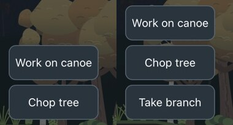
Available actions shifted position when nearby options appeared or disappeared.
Each action now occupies a fixed slot and has an icon before its label.
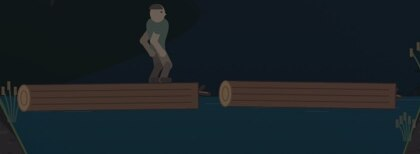
One end of each trunk appeared flat. Jump impact produced little visible movement.
Both ends are rounded, with bark and cut-face detail. Landings produce a deeper dip, rocking, and water ripples.
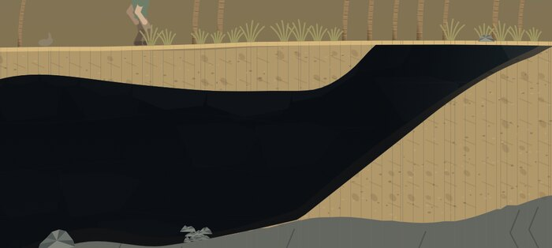
Deep cave textures were difficult to see, and loose objects retained outdoor brightness.
Entrance daylight is stronger, deep rock texture remains visible, and stones and loose wood use the cave lighting.
Felled trunks can support players or serve as canoe material. Stones can be gathered underground.
At this release, cross-client agreement on floating trunk positions remained an open issue.

Saved branches could remain suspended because their state marked them as settled.
Released branches, planks, and logs now fall until supported by ground or water. Unsupported wood in existing saves settles on load.
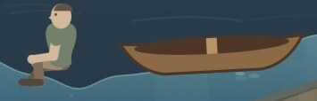
Remote paddler updates arrived more often than the saved canoe position, separating the rider and hull on observers’ screens.
The hull and rider now move together on remote clients. Version 0.12.68 also synchronizes paddle animation.

Loose branches settled underwater, and floating trunks stayed static.
Branches now rise to the surface. Trunks bob and roll, with their walkable surfaces moving with them.
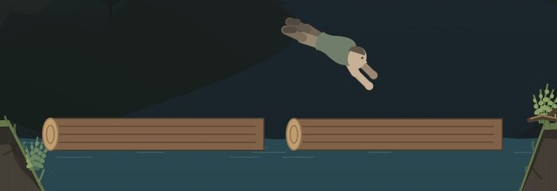
Water detection started the dive animation during jumps that would land on a floating trunk.
The jump prediction now checks for a trunk landing before triggering the dive pose.

Characters passed through large floating trunks and entered the water.
Large floating trunks now support landing, walking, and jumping. They dip and bob under the character’s weight.
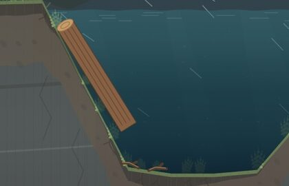
A felled trunk retained its slope-aligned position underwater, where the canoe work action was still available.
Trunks now float when they have room to clear the bank. Canoe work requires dry ground.